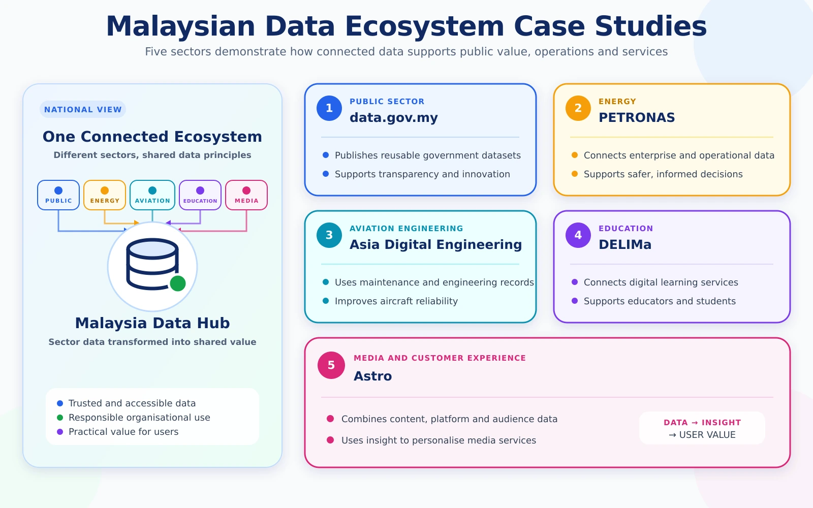

Data ecosystems in Malaysia
Focus on the organisational need, stakeholders, information value and responsibility—not on detailed technology.

Malaysia’s Official Open Data Ecosystem
data.gov.my connects ministries and public agencies that produce data with citizens, researchers, developers and organisations that use it. Datasets, dashboards and an official API illustrate how public information can be prepared and delivered responsibly.
| Data producers | Ministries, departments and public agencies |
|---|---|
| Data platform | data.gov.my |
| Data users | Citizens, students, researchers, developers and businesses |
| Key concerns | Accuracy, timeliness, metadata, licensing, privacy and accountability |
PETRONAS Enterprise Data Hub
A shared enterprise data environment supports access to trusted information, organisational decision-making and regulatory responsibilities.
Read case study ↗Asia Digital Engineering
Operational and engineering information supports maintenance activities, organisational dashboards and responsible decision-making.
Read case study ↗DELIMa
Malaysia’s digital learning environment connects millions of students and teachers across schools, administrators and national decision-makers.
Read case study ↗Astro
Customer and content data supports service relevance and personalisation while raising important questions about privacy and responsible use.
Read case study ↗Questions for every case
- Who generates the data?
- Who owns or is responsible for it?
- Who needs to use it?
- What organisational value does it create?
- What could happen if it is incorrect, late or unavailable?
- What privacy or access concerns should be considered?